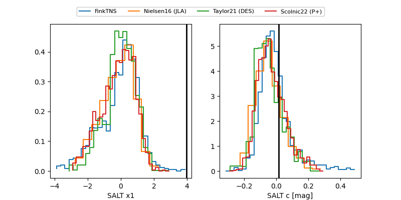

FINK: ZTF25abmpemw
Lasair: ZTF25abmpemw
ALeRCE: ZTF25abmpemw
TNS: 2025wsh
YSE: 2025wsh
ZTF25abmpemw (ztf,fink)
2025wsh (tns,yse)
ATLAS25kxx (atlas)
equatorial (ra, dec) = (43.9613,+6.89615)
galactic (l, b) = (168.9756,-44.57075)

last atlaso=20.22, ztfg=20.21, ztfr=19.77
1 atlaso, 6 ztfg, 5 ztfr detections